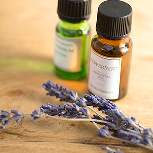
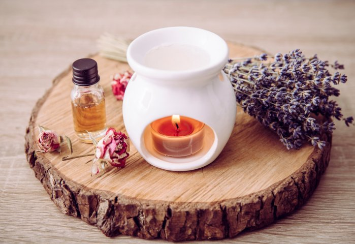

ドライブ
沖縄本島で、糸満から北は名護まで半年に1度のペースでドライブしています。
特におすすめのドライブエリアは名護湾の見渡せる国道58号線沿いです。
天気のよい、晴れた日に行くとエメラルドグリーンの海がキラキラしていて癒されます。
アロマテラピー
様々な手法がありますが、私はアロマポットを用いた芳香浴という手法で楽しんでいます。
やり方
アロマポットの上部にある受け皿にアロマオイル2,3滴とお水を入れて
下にキャンドルをつけるだけ
受け皿が温まるとアロマオイル水が空気中に拡散され香りが広がります。


※アロマポットを使用する際はやけどにご注意ください。
経歴
ホームへ戻る